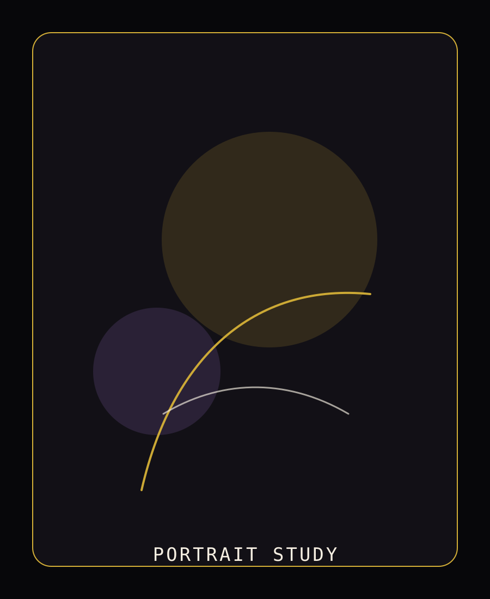
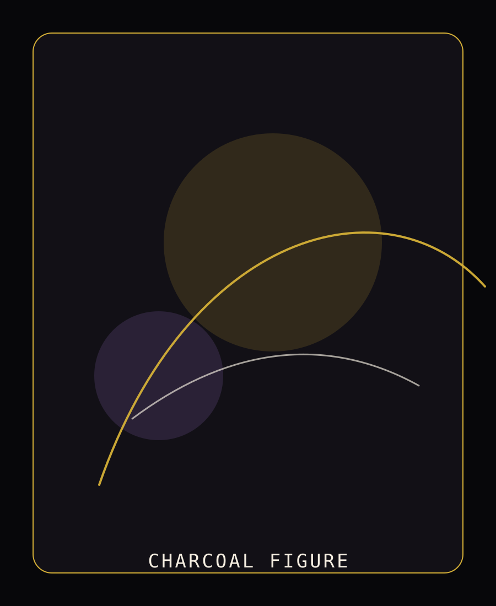
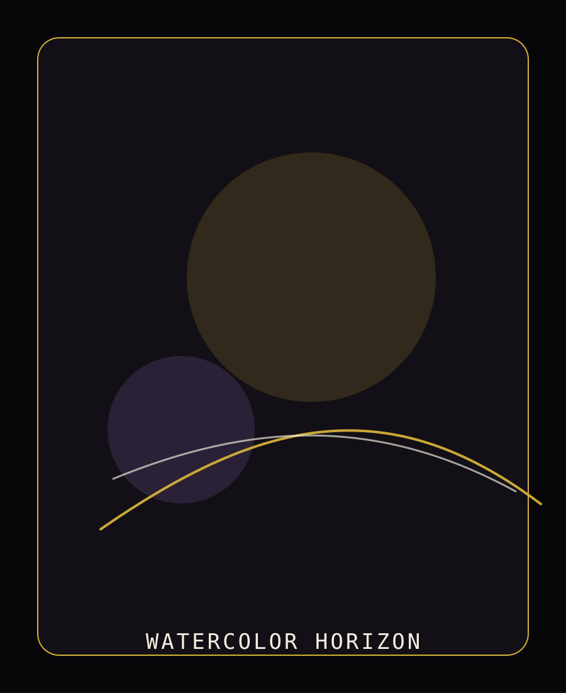
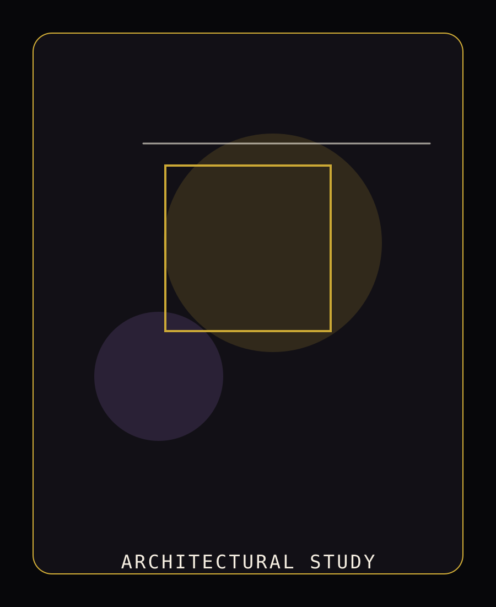
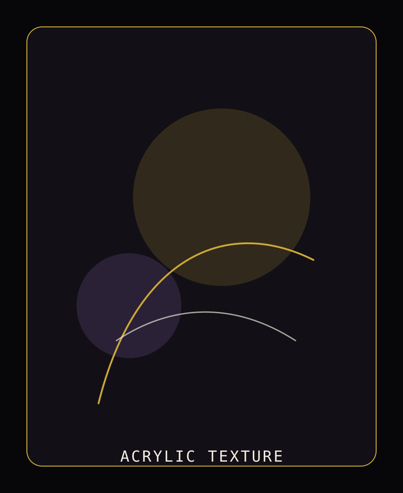

Portrait Study
A quiet, close-cropped study in graphite.
Graphite on paperView
Charcoal, ink, and pigment — made by hand.
A collection built from graphite, charcoal, watercolor, ink, and acrylic — where every mark carries the direct trace of the hand that made it.
Curated Archive
Click any piece to enter a refined fullscreen viewing experience.

A quiet, close-cropped study in graphite.

Dramatic contrast built from raw charcoal.

Soft washes describing an open sky.

Precise linework built from structure.

Built-up pigment and physical texture.

Fast, exploratory process work.